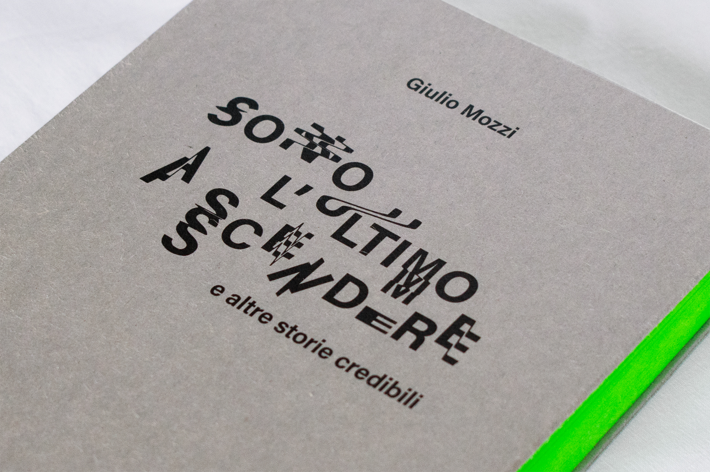
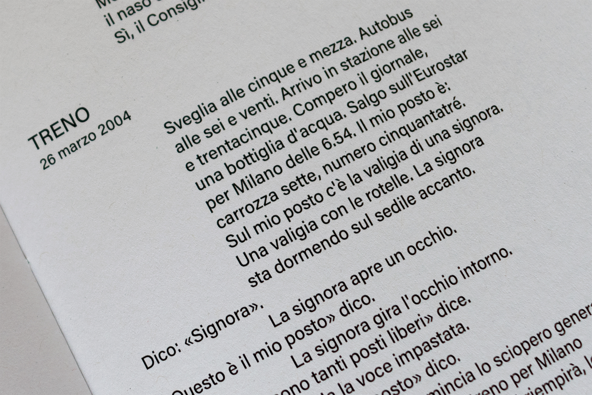
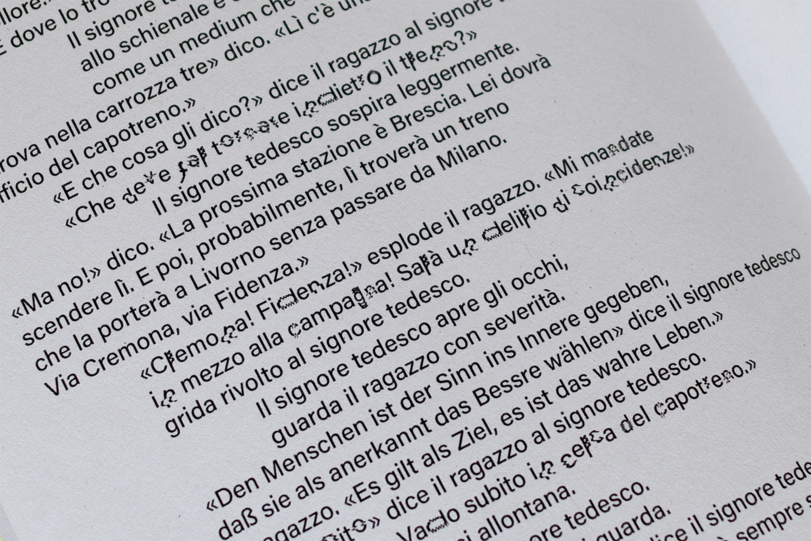
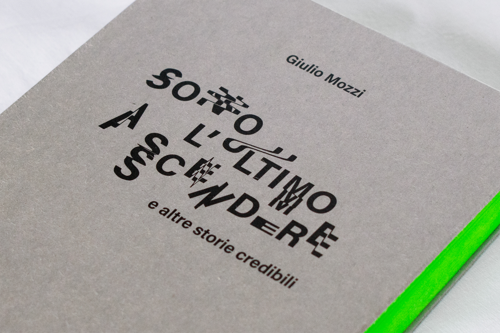
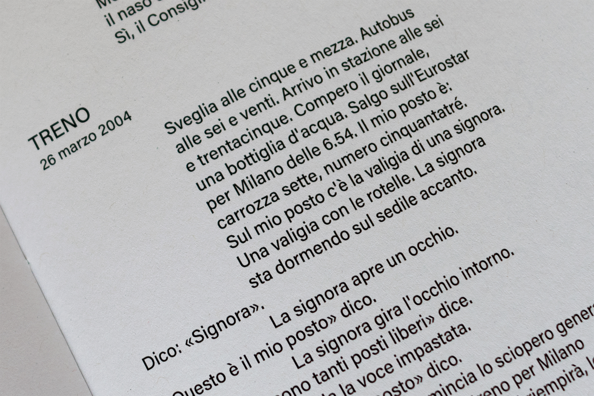
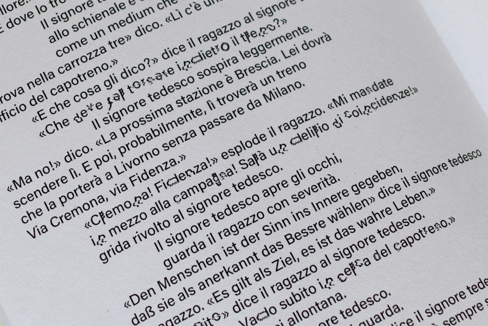

Visual book Sono l'ultimo a scendere (e altre storie credibili)
Detail of the visual book's cover

Detail of the visual book's binding
 Details of the visual book's layout and typography
Visual book Sono l'ultimo a scendere (e altre storie credibili)
Detail of the visual book's cover
Detail of the visual book's binding
 Details of the visual book's layout and typography
Visual Book
The aim of this lab was to create a "Visual Book" whose graphic and material features could reflect the nature of its contentents. I worked on Sono l’ultimo a scendere (e altre storie credibili) by Giulio Mozzi, a dairy of episodes from the main character's daily life.
I decided to emphatize the use of the dialogue as a narrative structure through the layout of the page. The interactions, focus of the stories, are also characterised by an absurdity created by the character's inability to communicate. This element was translated usign typography and its distorsion.
The tension between daily life's banality and the absurdity of the conversations inspired also the chromatic choices for the binding of the book.
Laboratorio di Sintesi Finale
Proff. M. Piazza, M. Pea, L. Pitoni
A.A. 2019/2020
Project by:
Marta Sironi